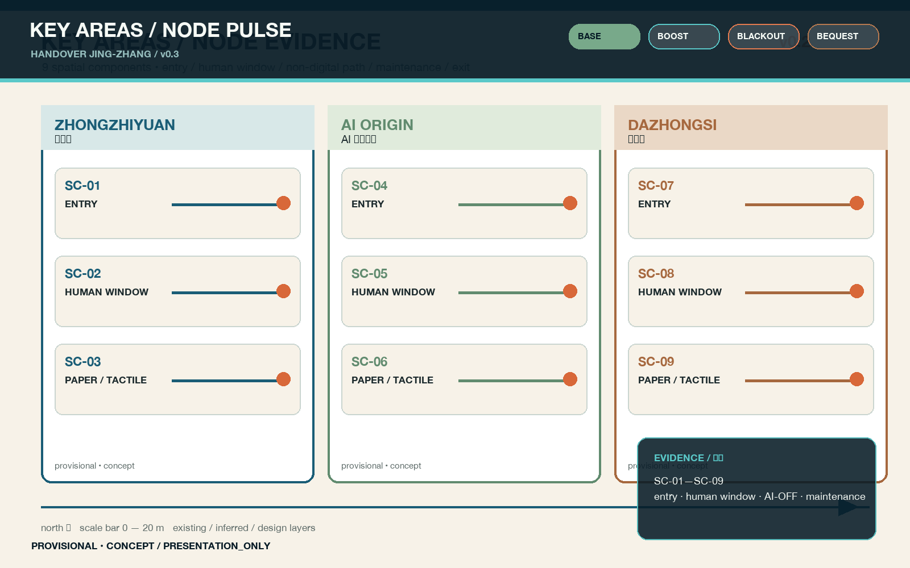
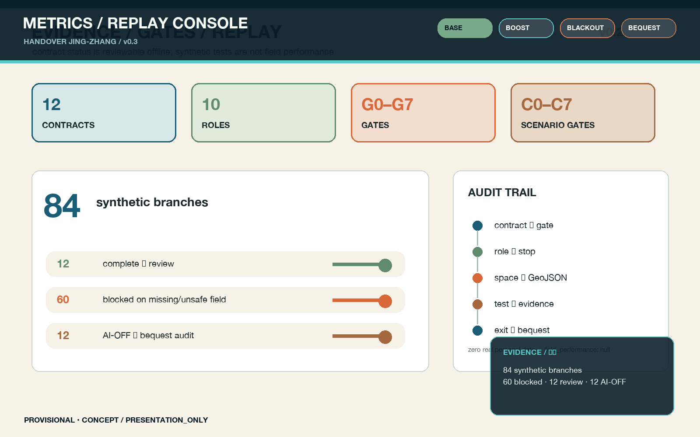
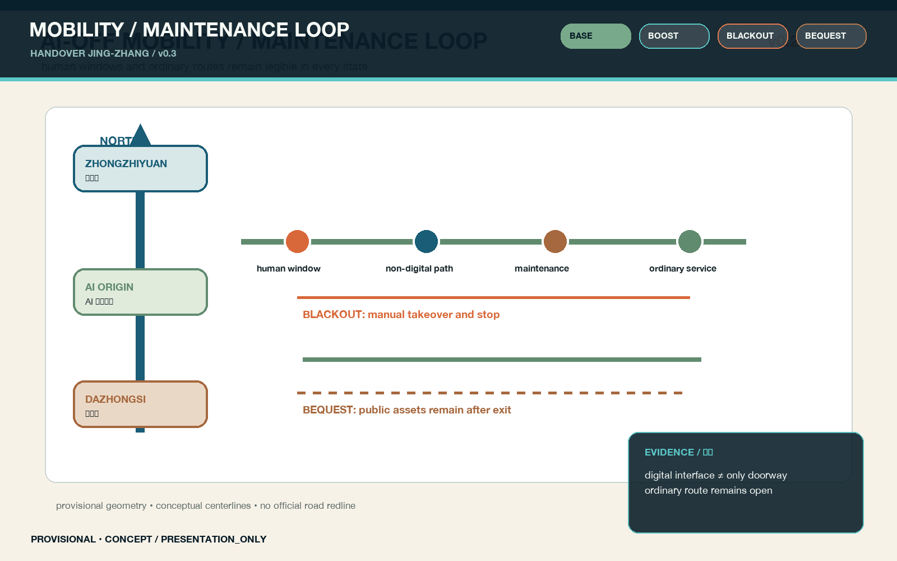
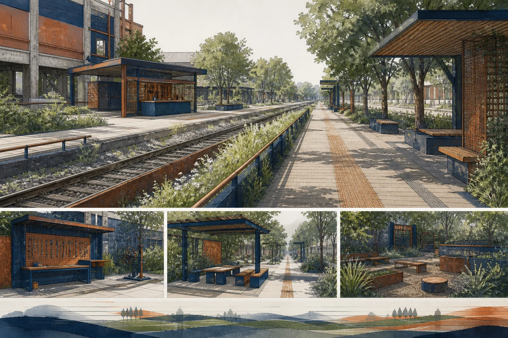

Spatial evidence



A civic operating console for contracts, nodes, human takeover and public return.

Modern presentation is an evidence layer, not a replacement for drawings or GeoJSON.
field_performance: null
synthetic only · not field performance


